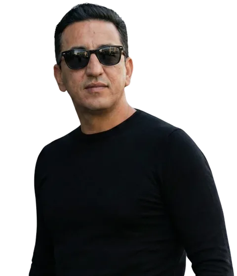

Método Capta+
Gestão Inteligente para Captação Pública

Quem sou eu
Engenheiro de captação de recursos públicos e privados. Conduzo organizações da sociedade civil da autorização ao recurso assinado — com método, governança e prestação de contas auditável.
O que é o Método Capta+
Um método de direção em captação: transforma informação dispersa em projeto preparado para captar — com conformidade, evidência e continuidade.
- Quatro camadas: jurídica, técnico-operacional, fiduciária e radar
- Cinco frentes: do estatuto à prestação de contas
- Seis etapas: do diagnóstico ao acompanhamento
Estação Captação
O canal onde a captação pública deixa de ser sorte e vira engenharia.
- Aulas e análises sobre editais, emendas e leis de incentivo
- Bastidores de captação real, sem teoria solta
- Erros que travam projetos — e como destravá-los
Minuto Capta+
Mentorias e conteúdo direto para gestores e captadores que querem transformar intenção em recurso.
Últimos estudos e newsletters
A Estratégia de Captação mais recente do Método Capta+ — atualiza automaticamente com a home.
Leia a Estratégia!Allan Márcio
Especialista em captação de recursos públicos e incentivados · Método Capta+
Atua com captação pública e incentivada e com a estruturação de projetos para o terceiro setor, a partir da prática com OSCs, cooperativas, associações, federações, institutos e fundações.
Áreas de atuação
- Leis de incentivo (Rouanet, LIR, LIE, FIA, Fundo do Idoso, PNAB)
- MROSC e emendas parlamentares
- Plano de trabalho, elegibilidade e prontidão documental
- Prestação de contas e governança fiduciária
Perfis oficiais: LinkedIn · Instagram · YouTube · Substack
Atuação de meio: o recurso captado pertence à organização. Conteúdo revisado por Allan Márcio.